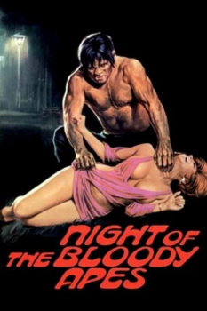
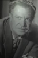

Also known as:La horripilante bestia humana (original title)
Country:Mexico, 81 minutes
Spoken languages:Spanish
Genres:Horror, Sci-Fi
Director(s):René Cardona
Writer(s):René Cardona
Video Codec:Unknown
Number: 2668


Certification:R
Storyline:
A surgeon transplants the heart of an ape into his ailing son with horrific results.
Cast: 

Medium: Original DVD,
Comments: w/ Feast of Flesh
Loaned: No
Aspect ratio: Unknown